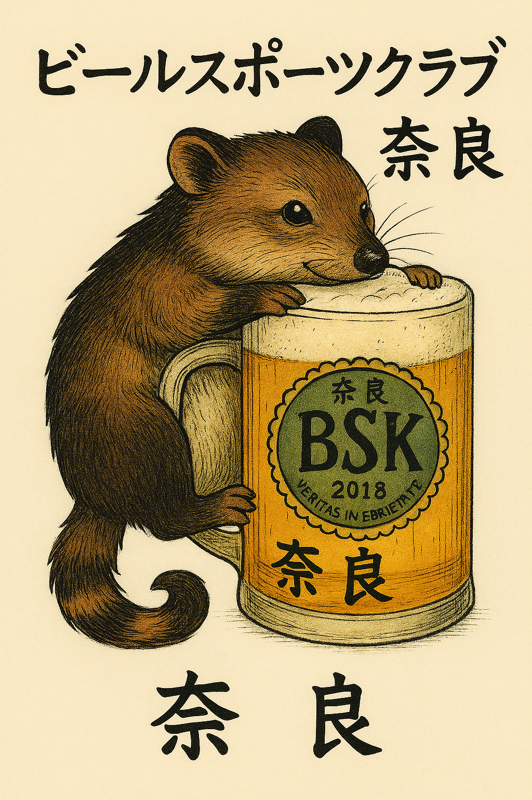

1. Gesellschaft / Bewegung / Plattform
1. Gesellschaft / Bewegung / Plattform
- Bündnis für sinnvolle Vernetzung in regionalen Belangen
- Bewegung für soziale Vielfalt und respektvolle Begegnung
- Berner Struktur für verbindende regionale Beiträge
2. Bildung / Zukunft / Ethik
- Bildungsstelle für Selbstverantwortung, Vielfalt, Respekt & Bewusstsein
- Berner Schule für vorausschauendes, resilientes Bewusstsein
- Bildungs-Syndikat für Vernunft und regionale Bildung
3. Technik / Innovation / Forschung
- Bionik-Systeme für vernetzte regionale Bewegungen
- Berner Studio für visionäre robotische Begleiter (z. B. Aarulon, Mechafisch)
- Baukasten-System für variable, regionale Beteiligung
 4. Gesellschaft + Genuss
4. Gesellschaft + Genuss
- Bier, Solidarität, Vielfalt, Region, Begegnung
- Brauchbare Strukturen für Verantwortung, Respekt und Beziehung
- Bündnis für Substanz, Vielfalt, Rausch & Bewusstsein (sanft anarchisch)
5. Für Kultur, Natur, Mensch & Region
- Begegnungsstätte für Sinnsuchende, Verbindende, Regional Bewusste
- Bündnis Schweizer Volkskultur & regionale Biodiversität
- Berner Szene für Veränderung, Ruhe & Beteiligung
Qualitätskontrolle / Verantwortungssystem
Disclaimers
- Diese Struktur wird ohne Gewährleistung bereitgestellt.
- Die Nutzung erfolgt auf eigene Verantwortung.
- 4789 ist ein Standard für Verantwortung, keine Person.
- Nutzung nur reflektiert und mit Konsequenz.